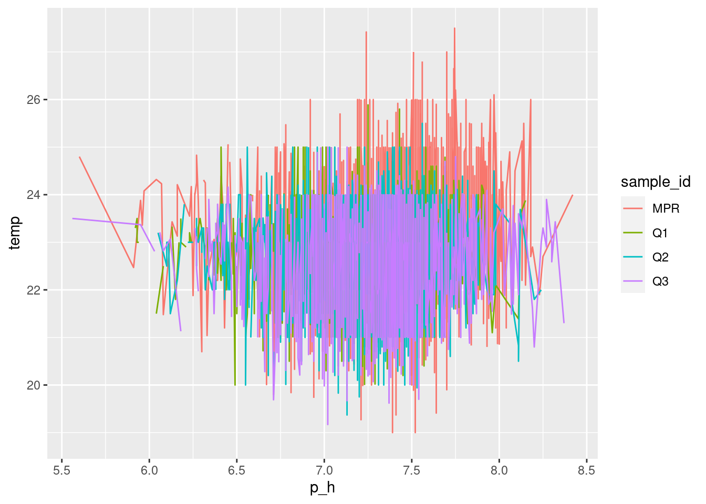
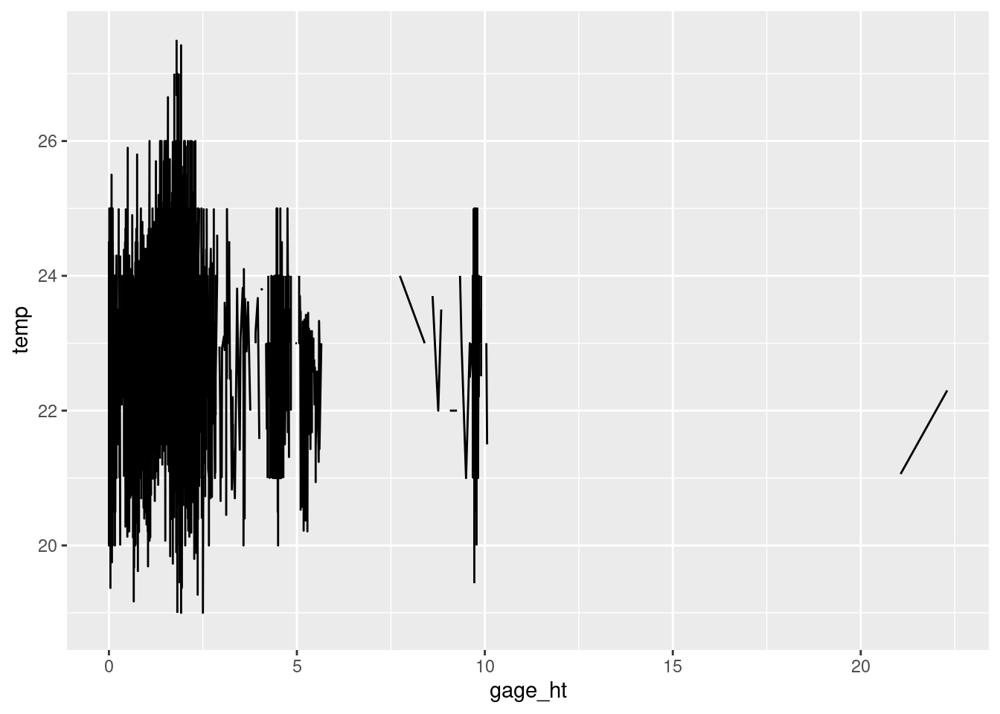
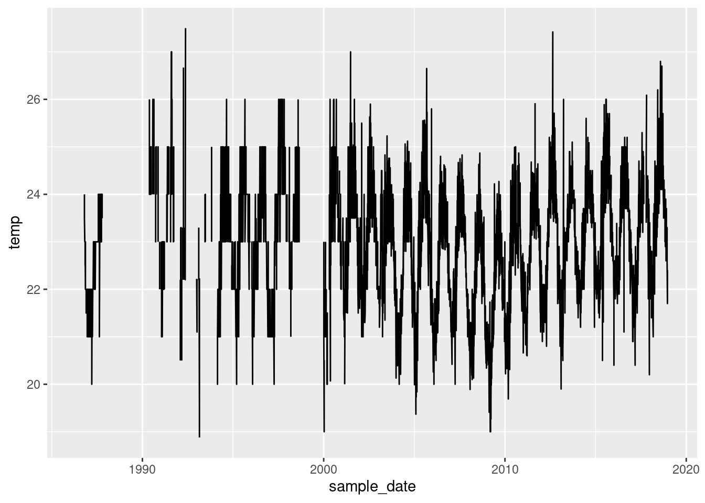
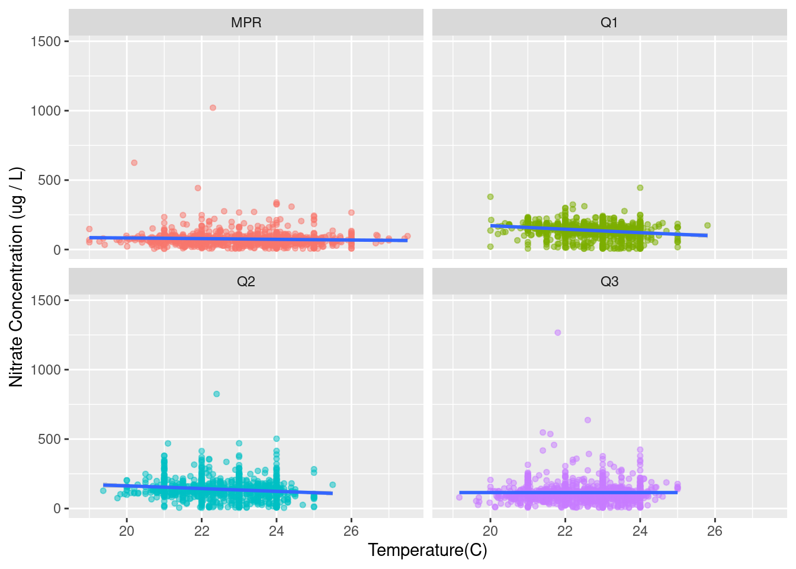
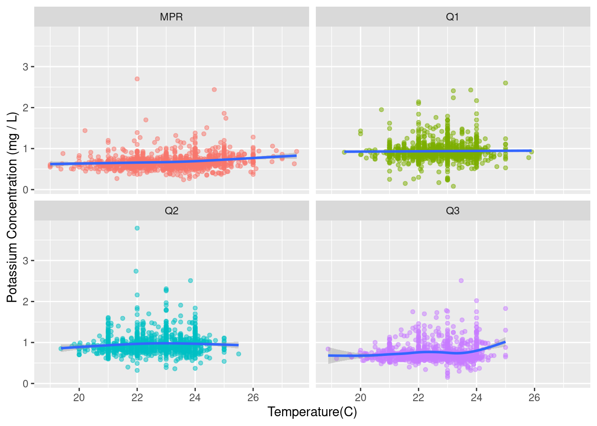
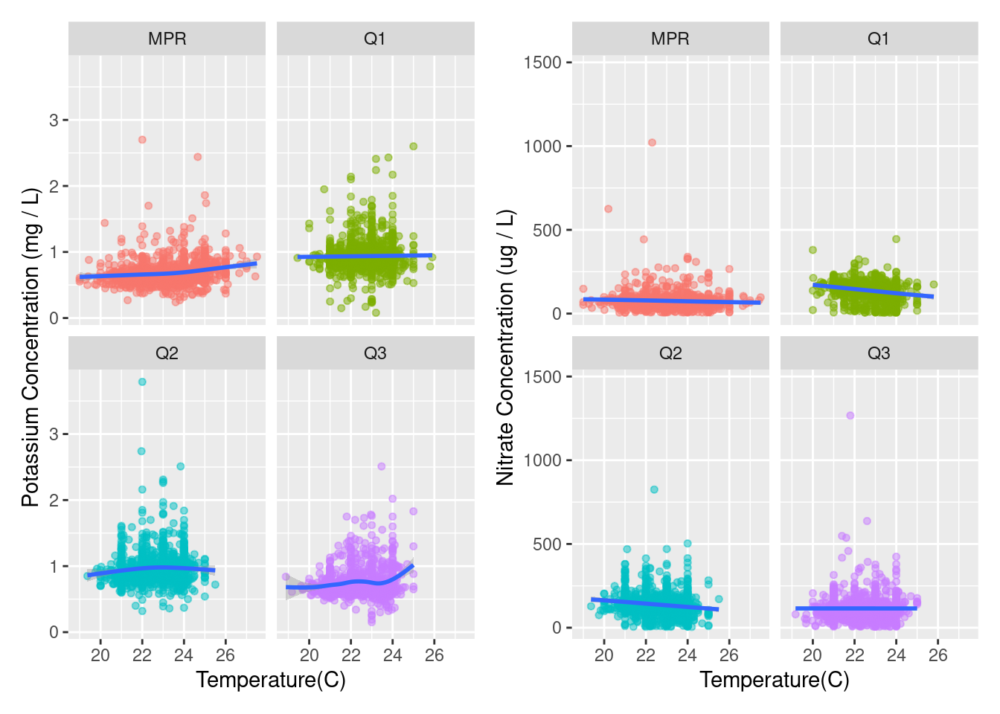
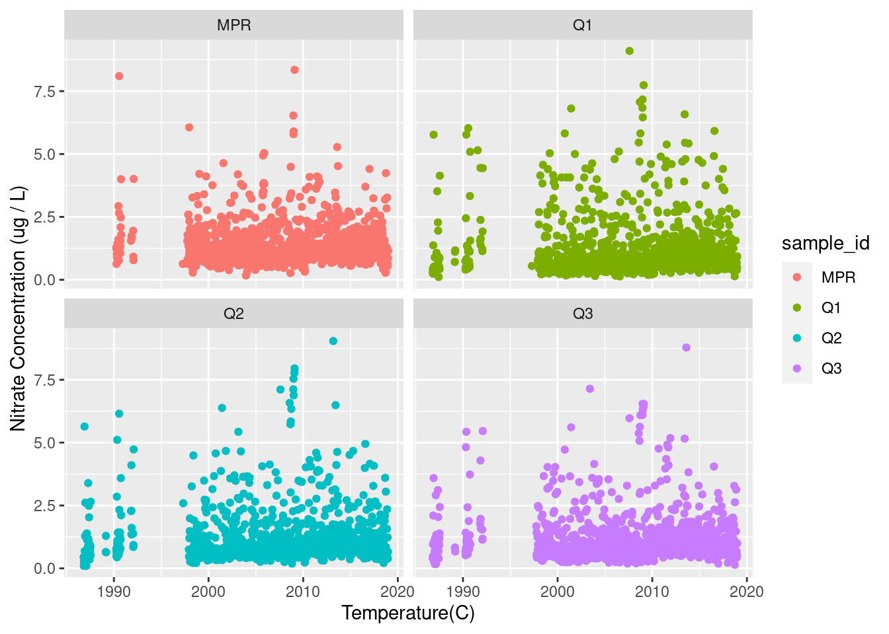

library(tidyverse)
library(janitor)
library(patchwork)
library(here)eds214-question
How does temperature at each site affect measured stream chemistry parameters?
Read in Data
#read in data from the four datasets and clean column names
prm_data <- read_csv("/courses/EDS214/group_project/got_git/got_git_data/RioMameyesPuenteRoto.csv") %>%
clean_names()
bq1_data <- read_csv("/courses/EDS214/group_project/got_git/got_git_data/QuebradaCuenca1-Bisley.csv") %>%
clean_names()
bq2_data <- read_csv("/courses/EDS214/group_project/got_git/got_git_data/QuebradaCuenca2-Bisley.csv") %>%
clean_names()
bq3_data <- read_csv("/courses/EDS214/group_project/got_git/got_git_data/QuebradaCuenca3-Bisley.csv") %>%
clean_names()Join data
#joining data and filtering by sample date, no3, k, sample_id, temp ,gage_ht
all_sites_data_temp <- full_join(prm_data,
bq1_data) %>%
full_join(bq2_data) %>%
full_join(bq3_data) %>%
select(sample_date,
no3_n,
k,
sample_id,
p_h,
temp,
gage_ht)Exploring parameter relationships with temperature
#comparing temperature and pH
temp_ph <- ggplot(data = all_sites_data_temp,
aes(x = p_h,
y = temp)) +
geom_line(aes(color = sample_id))
temp_ph
#comparing temperature and gage height
temp_gage <- ggplot(data = all_sites_data_temp,
aes(x = gage_ht,
y = temp)) +
geom_line()
temp_gage
#comparing temperature and year
temp_year <- ggplot(data = all_sites_data_temp,
aes(x = sample_date,
y = temp)) +
geom_line()
temp_year
#comparing temperature and nitrate
temp_nitrate <- temp_year <- ggplot(data = all_sites_data_temp,
aes(y = no3_n,
x = temp)) +
geom_point(aes(color = sample_id),
alpha = 0.5,
size = 1.3,
show.legend = FALSE) +
facet_wrap(~sample_id) + #facet wrap depending on the sites
geom_smooth() +
labs(x = "Temperature(C)",
y = "Nitrate Concentration (ug / L)")
temp_nitrate
#comparing temperature and potassium
temp_potassium <- temp_year <- ggplot(data = all_sites_data_temp,
aes(y = k,
x = temp)) +
geom_point(aes(color = sample_id),
alpha = 0.5,
size = 1.3,
show.legend = FALSE) +
facet_wrap(~sample_id) +
geom_smooth() +
labs(x = "Temperature(C)",
y = "Potassium Concentration (mg / L)")
temp_potassium
#Stack the plots using Patchwork package
k_no3_plot <- temp_potassium + temp_nitrate
k_no3_plot
#saved the graphs in a jpg
ggsave(filename = here::here("figures", "k_no3_temp.jpg"),
plot = k_no3_plot,
width = 9)
ggsave(filename = here::here("figures", "no3_temp.jpg"),
plot = temp_nitrate,
width = 8)
ggsave(filename = here::here("figures", "K_temp.jpg"),
plot = temp_potassium)Extra Exploration
#Playing data with DOC
#combining all data with doc added
all_sites_data_temp <- full_join(prm_data,
bq1_data) %>%
full_join(bq2_data) %>%
full_join(bq3_data) %>%
select(sample_date,
no3_n,
k,
sample_id,
p_h,
temp,
gage_ht,
doc)
#created graph with doc and sample date
temp_doc <- ggplot(data = all_sites_data_temp,
aes(y = doc,
x = sample_date)) +
geom_point(aes(color = sample_id)) +
facet_wrap(~sample_id) + #facet wrap depending on the sites
labs(x = "Temperature(C)",
y = "Nitrate Concentration (ug / L)")
temp_doc